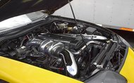

Servicii de reparatii
La service-ul nostru va oferim numeroase servicii pentru repararea automobilului dumneavoastra.
1. Fluide - schimb ulei si filtre, fluide de racire
2. Sistemul de franare - placute si discuri de frana, saboti si cilindrii de frana, cabluri, etrieri
3. Elemente de directie - uleiuri,capete de bara, bielete directie, burduf, caseta, pompa servo, rulmenti, articulatii
4. Elemente de suspensie - arcuri, amortizoare, flanse, rulmenti sarcina, brate suspensie,si antiruliu, pivoti, bucse
5. Sistemul de esapament - tobe, catalizator, sonde lambda, tampoane, turbo-compresor
6. Motor - kit curele distributie, kit curele transmisie, injectoare,garnituri , suporti, tampoane
7. Cutie de viteze - kit ambreiaj, volanta, articulatii planetare, pompa si cilindru ambreiaj, uleiuri
8. Sistem de racire - radiatoare apa, ulei, pompa apa, termostat, furtune, sonde, incalzire/racire habitaclu
9. Roti - inlocuiri anvelope, jante, echilibrari.
1. Pornire motor - electromotor, contacte
2.Sistem incarcare baterie - alternator, releu incarcare, acumulator
3. Sistem de iluminare - verificari, inlocuiri, reglaje faruri si auxiliare
4. Unitati de control - senzori, relee, intrerupatoare, semnalizare, unitati centrale de comanda
5. Climatronic - compresor, radiator, vaporizator, uscator, supape comanda, senzori, electroventilatoare
6. Sistem de confort - inchidere centralizata, unitati de comanda usi, geamuri si oglinzi electrice
1. Vopsit piesa
2. Vopsit si tinichigerie
3. Vopsit plafon
4. Retus si tinichigerie
5. Vopsire si tinichigerie integrala
6. Schimbat culoare cu tinichigerie
7. Polish integral
1. Revizie ulei si filtre
2. Resetare bord
3. Schimbat ulei si filtre
4. Schimbat antigel
5. Schimbat lichid frane
6. Schimbat ulei cutie viteze
7. Schimbat ulei servodirectie
Garantie
Servicii cu garantie
Orice defectiune aparuta in perioada de garantie se remediaza GRATUIT (prin repararea sau inlocuirea componentelor defecte) in unitatea noastra. Se asigura desfasurarea programelor de garantie, indiferent de unde au fost achizitionate automobilele.
